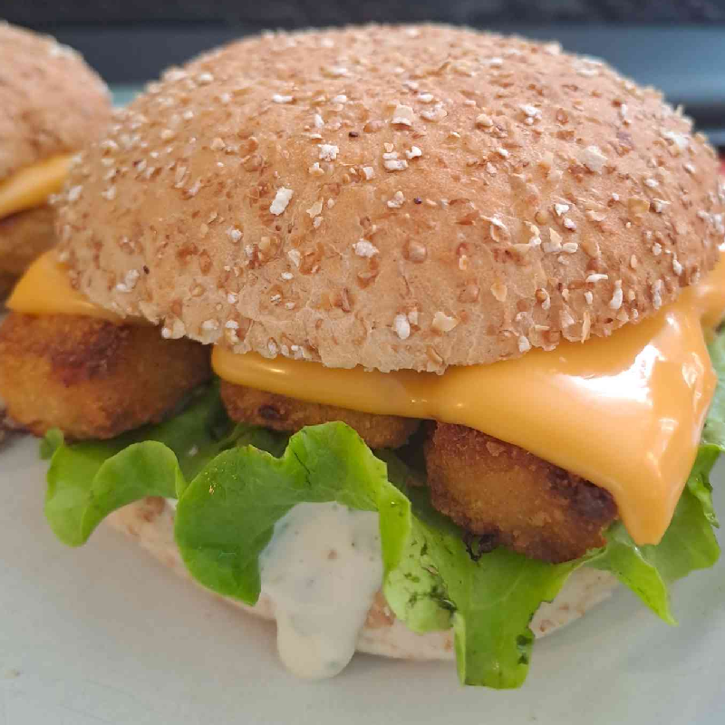
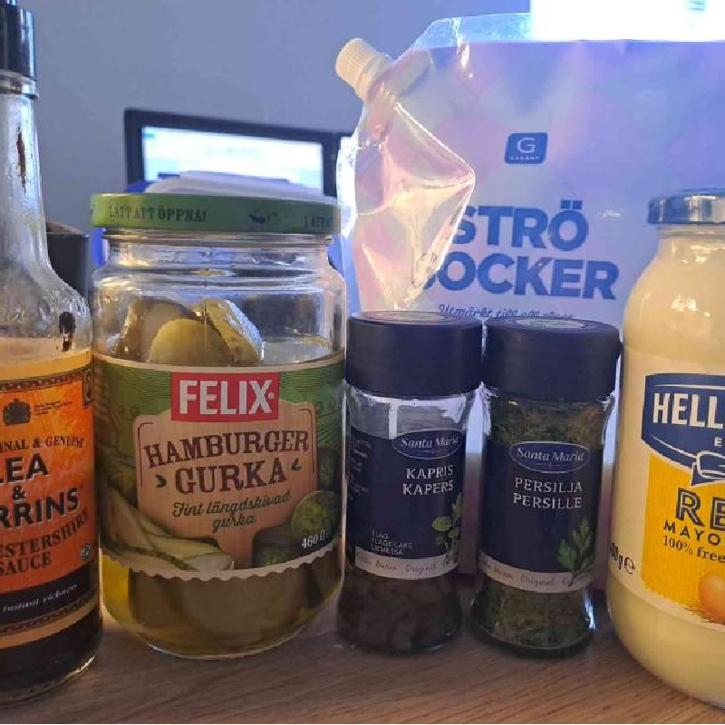
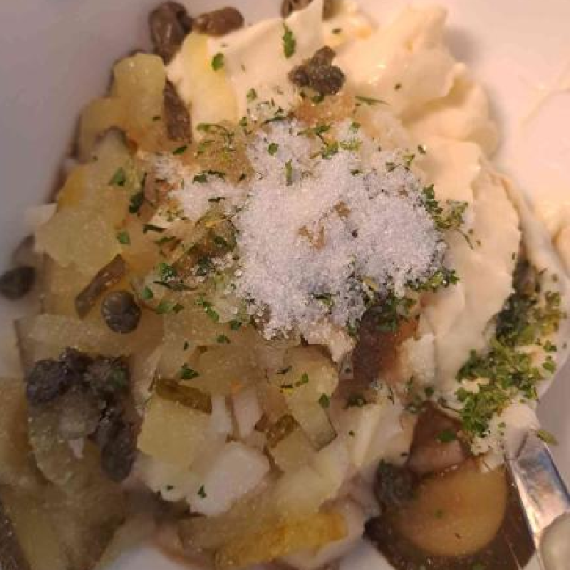
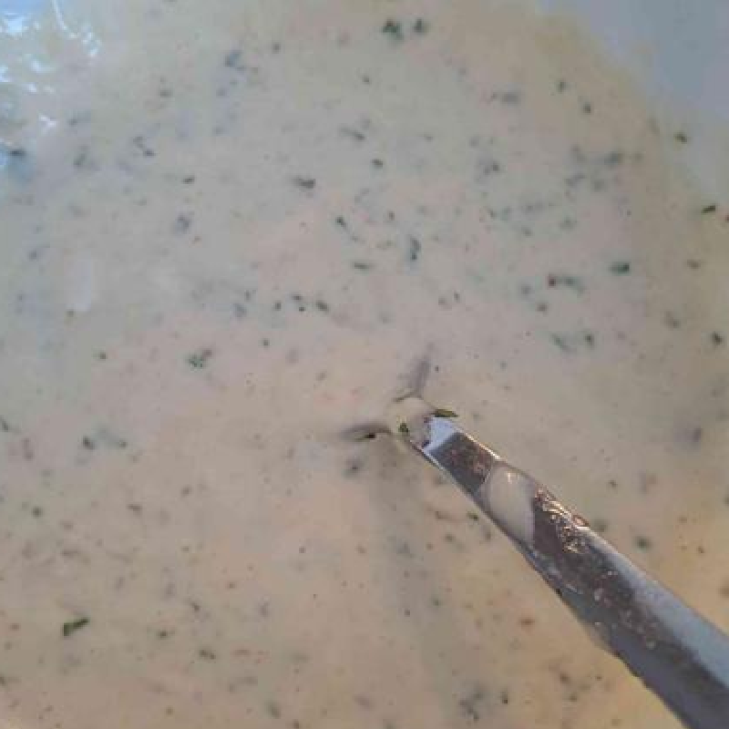
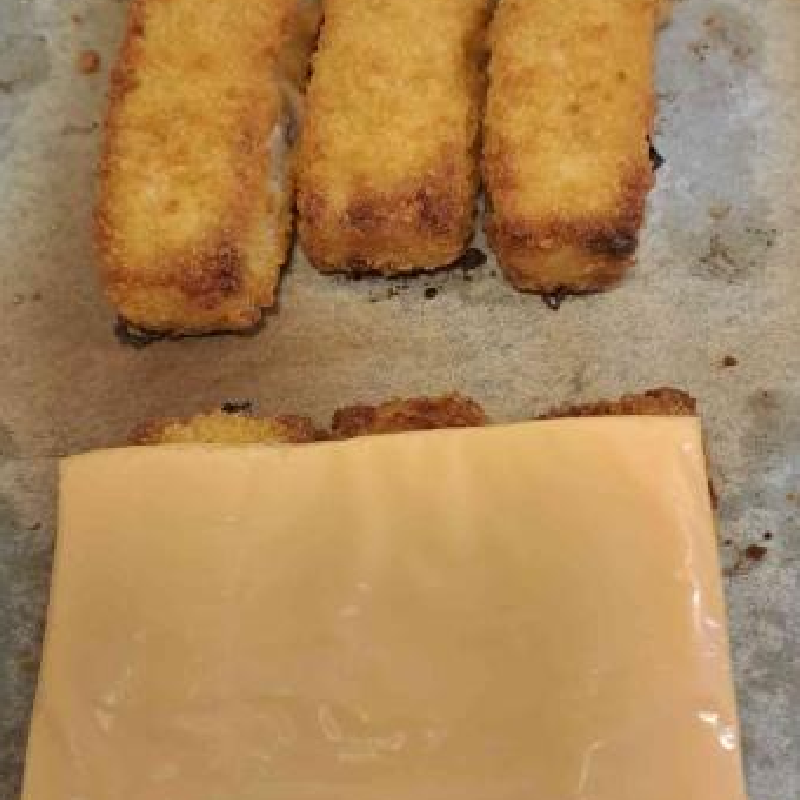

Ingredients in storage
Fishstick Burger

This recipe originates from my love for the Filet-o-Fish on McDonalds. It provides a healthier version, while maintining the amazing taste. If you have fishburgers, you can exchange them for the fish sticks. The sauce is actually an attempt at a copycat of the McDonalds tartar sauce. And the taste is quite similar in my opinion. The sauce will last for a couple days in the fridge. All you have to do for each meal is to cook the fishsticks in the oven, or in a pan if prefered.




Ingredients needed